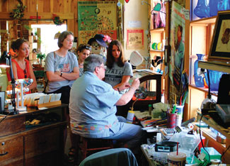
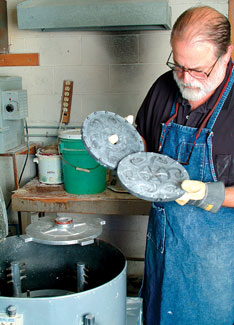

The story of how Berea became the “folk arts and crafts capital of Kentucky” is itself a local folk tale. In 1893, William Frost, the president of Berea College, took a summer horseback trip through the mountains of Appalachia to recruit students. His mission was to make higher education available to everyone (Berea was the first southern college to educate black and female students). He saw many hand-woven baskets and rugs in daily use in mountain cabins, and offered to exchange them for tuition.
As a result, interest in traditional Appalachian culture flourished. Berea College implemented an ongoing policy of waiving tuition for academically exceptional, low-income students who agree to work 10 hours a week; and the town of Berea soon blossomed as a center of folk art in woodworking, jewelry making, quilting, glass blowing and more.
Today, between 300,000 and 400,000 tourists come to Berea every year to view and purchase the work of students as well as that of widely acclaimed artists such as jeweler Ken Gastineau (see photo, above right). His studio is one of nine Arts Council-certified locations where visitors can watch artists at work and purchase finished items.
Gastineau likes Berea’s location - 30 miles from Lexington and also fairly close to Louisville and Cincinnati, Ohio. He also likes living in a place that’s environmentally active and is a member of the nonprofit Sustainable Berea. “Soon we will auction off 50 rain barrels that have been painted by local artists, as a way to conserve water,” he says.
Another sustainable initiative in Berea is the 50-unit ecovillage that houses and educates college students. This world-class model for sustainable living includes passive solar heating, photovoltaic panels and wind-powered electrical generators. In-neighborhood treatment of waste is accomplished through an “ecological machine” that converts sewage to irrigation-quality water by mimicking the way nature treats such wastes (with snails, fish, cattails and microbes). The ecovillage’s goals include reducing energy use by 75 percent compared with the regional average; reducing its per capita water use by 75 percent compared with the average Berea household; and recycling, reusing or composting at least 50 percent of would-be waste.
Population: 13,230
Median House Price: $106,000
Climate: Mild four seasons. January average: 36 degrees; July average: 75 degrees.
Natural Assets: Elevation: 1,034 feet; great whitewater paddling on Silver Creek; great hiking at Indian Mountain; Central Kentucky Wildlife Management Area.
Sustainability Initiatives: Sustainable Berea enables home energy audits, edible yard projects and other local eco-activities.
Check out the other towns on our 2009 list of Great Places You’ve Never Heard Of.
|
 WWW.KENTUCKYTOURISM.COM; TERRY NELSON/BEREA TOURIS A Berea artist blows glass beads for spectators. |
 TERRY NELSON/BEREA TOURISM Artist Ken Gastineau at work in his jewelry studio. |
|